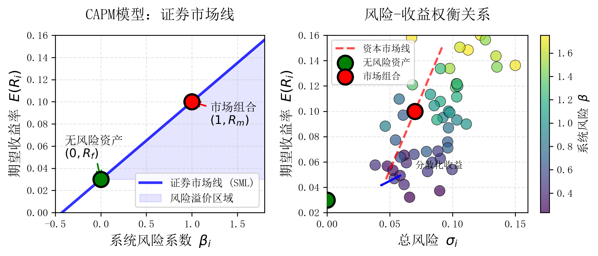

CAPM模型在中国证券市场的有效性检验: 基于Black-Jensen-Scholes和Fama-MacBeth方法¶
杉岛明菜official
GitHub repo: Greenmilkvvv/CAPM-A-Share-Empirical
说明: 本项目为 ECNU 2025 秋季学期 金融资产定价 课程的期末 project.
本文参考:
- Sharpe W F. Capital asset prices: A theory of market equilibrium under conditions of risk[J]. The journal of finance, 1964, 19(3): 425-442.
- Black F, Jensen M C, Scholes M. The capital asset pricing model: Some empirical tests[J]. 1972.
- Fama E F, MacBeth J D. Risk, return, and equilibrium: Empirical tests[J]. Journal of political economy, 1973, 81(3): 607-636.
实证检验方法¶
资本资产定价模型（Capital Asset Pricing Model, CAPM）是现代金融理论中最为重要的理论之一. 它描述了资产预期收益率与市场风险之间的关系.

项目参照 Black‑Jensen‑Scholes（1972）与 Fama‑MacBeth（1973）两种经典计量框架, 基于1995‑2024年共三十年中国A股日度数据, 使用 Python 对 CAPM 在中国股市的有效性进行系统再检验.
数据处理¶
我们对原始数据进行预处理, 最终得到了 30 年间个股的日超额收益率序列以及市场组合(使用上证综指收益率代理)的日度超额收益率序列. 所以, 下面讨论的都是超额收益率.

Black‑Jensen‑Scholes（1972）方法¶
black-jensen-scholes.py 中, 我们定义了 CAPMBlackJensenScholes 类, 该类包含以下功能:
-
时间序列检验: 使用前5年数据, 使用OLS回归估计 \(\beta\) 值, 方程为 CAPM 模型的基本形式: \(r_{it} - r_{ft} = \beta_{i}(r_{mt} - r_{ft}) + \varepsilon_{it} .\) 由此将 \(\hat{\beta}\) 最小的 10% 的股票归入 组合1, 依此类推, 得到 10 个投资组合. 使用第 6 年的数据计算 10 个组合各自的平均超额收益率. 按照这种方式滚动计算, 得到 25 年 10 个投资组合的平均超额收益率. 最终, 利用这 25 年的日度数据, 对每一个组合都做一个时间序列回归: \(r_{p_j,t} - r_{ft} = \beta_{j}(r_{mt} - r_{ft}) + \varepsilon_{p_j,t},\quad j = 1, \ldots, 10.\) 估计出 10 个投资组合的 \(\beta\) 值.
-
横截面检验: 使用上一步中计算得到的10个组合的平均日度收益率和 \(\beta\) 值, 进行横截面回归: \(r_{p_j,t} - r_{ft} = \gamma_0 + \gamma_1 \beta_{p_j,t} + \varepsilon_{p_j,t}, \quad j = 1, \ldots, 10.\)
-
核心假设检验: 对于任一个组合, 若符合 CAPM 模型, 则 \(\gamma_0\) 不应显著非0, 而 \(\gamma_1\) 应显著为正.


Fama‑MacBeth（1973）方法¶
fama-macbeth.py 中, 我们定义了 CAPMFamaMacbeth 类, 该类包含以下功能:
-
组合形成: 对于前 4 年数据, 使用 OLS 回归估计 \(\beta\) 值, 和 BJS 方法类似, 最终得到20个组合.
-
初始估计: 对于接下来 5 年数据, 在各组合内, 使用个股的日超额收益率数据直接对市场组合日超额收益率回归来分别估计个股的 \(\beta\). 将回归得到的个股 \(\hat{\beta}_p\), \(\hat{\beta}^2_p\) 和 残差的标准差 \(\hat{S}_{\varepsilon t}\) 进⾏简单平均, 得到各组合的⻉塔系数 \(\hat{\beta}_p\), 贝塔系数平方 \(\hat{\beta}_p^2\) 和标准差 \(\hat{S}_{\varepsilon t}\).
-
滚动更新: 每年都重新计算组合的 \(\hat{\beta}_p\), \(\hat{\beta}^2_p\) 和 \(\hat{S}_{\varepsilon t}\). 比如, 这 3 年是 1935-1937, 则计算区间分别是1930-1935, 1930-1936, 1930-1937.
-
模型检验: 对于接下来 4 年的数据进行回归: \(r_{p,t} - r_{f,t} = \gamma_{0 t} + \gamma_1 \hat{\beta}_{p,t-1} + \gamma_2 \hat{\beta}^2_{p,t-1} + \gamma_3 \hat{S}_{\varepsilon p ,t-1} + \varepsilon_{p,t}.\)
-
滚动重复: 把组合确定区间向后推 1 年, 重复之前的操作.